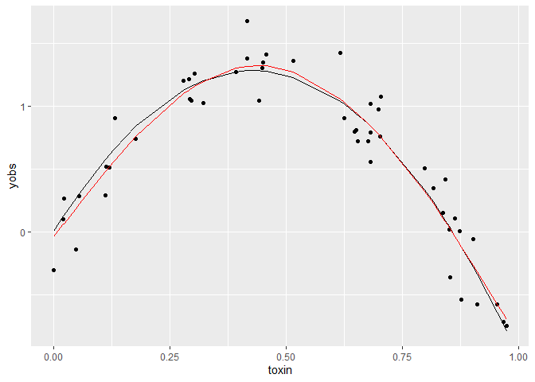
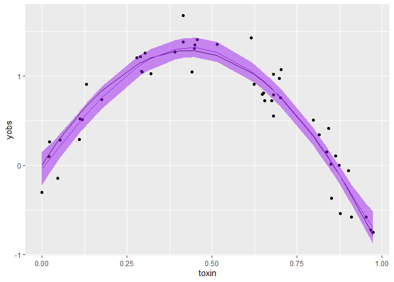
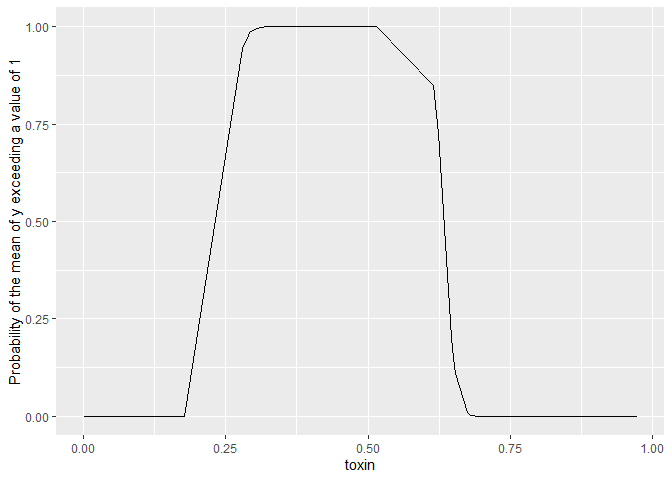

A neat trick with GAMs (generalized additive models) fit using the mgcv package is that you can use simulation to get Bayesian credible intervals. This is handy because it means you can easily calculate probabilities for any arbitrary transformation of your parameters.
For instance, we used this trick to calculate the probability that animal abundance was greater in an experimental treatment vs the control. Using a GAM meant we could also account for non-linear temporal effects.
The example I give below is for probability of exceeding a threshold.
Simon Wood explains in his book that there is a theoretical equivalence between GAMs from his package and an empirical Bayesian analysis. In short, the GAM penalty parameters (the ones that control the wiggliness of the non-linear fits) are analogous to Bayesian priors.
The reason we say ‘empirical’ Bayesian analysis is that the smoothing parameters are estimated from data, rather than having a prior.
Getting credible intervals from a GAM
Set-up data
This is well documented in Wood’s book as well as in the mgcv help files, see examples in ?predict.gam.
I made myself a handy little function to implement the CIs, which we will use in this post.
Here’s the set-up, including sourcing in my function
library(mgcv)
## Loading required package: nlme
## This is mgcv 1.8-42. For overview type 'help("mgcv-package")'.
library(ggplot2)
source("gam-CIs.R")Now let’s make up some data we can fit too. Let’s assume we are measuring biological responses (`y’) to a toxin:
set.seed(2024)
n <- 50
toxin <- sort(runif(n, 0, 1))
dat <- data.frame(toxin = toxin)
dat <- within(dat, {
ytrue = 6*toxin - 7*toxin^2
yobs = ytrue + rnorm(n, sd = 0.2)
})
ggplot(dat) +
aes(x = toxin, y= yobs) +
geom_point() +
geom_line(aes(y = ytrue))
ytrue is the true values of the function, and yobs are our data on this variable.
Fit a GAM
Now fit a GAM and add its predictions to our dataframe:
m1 <- gam(yobs ~ s(toxin),
data = dat)
dat$ypred <- predict(m1)
ggplot(dat) +
aes(x = toxin, y= yobs) +
geom_point() +
geom_line(aes(y = ytrue)) +
geom_line(aes(y = ypred), col = 'red')
The red line just shows the predictions from the fitted GAM, relative to the true curve (black line).
Plotting predictions with CIs
The first application of the empirical Bayes trick is to create a plot of predictions with credible intervals.
I won’t go into the detail of the implementation, please see Wood’s book and ?predict.gam for more info. But in short, you can sample predictions from the joint distribution of parameters and their covariances. We are assuming that parameters and their uncertainties are described by a multivariate normal distribution (methods like HMC and MCMC allow you to relax this assumption, such as when parameter values are skewed or multi-modal).
We need to account for parameter covariances because a higher estimate of one parameter might imply a lower or higher estimate for another parameter. e.g. slope and intercept values for a linear fit are negatively correlated (a low slope high intercept fit will have similar sums of squares to a high slope low intercept fit).
My function (simulate_gam_CIs) just implements the instructions given in ?predict.gam. If you are using more complex models I recommend diving into the code yourself, as I can’t guarantee it works in all cases (e.g. doesn’t work for models with coefficients on the variance parameter like the gaulss family).
gamCIs <- simulate_gam_CIs(m1,
newdata = dat,
forms = list(~x),
random_var = NULL,
offset = 0,
probs = c(0.025, 0.5, 0.975),
nsims = 1000)The function is drawing 1000 values from the posterior of the model. It then transforms the values according to the function given at forms. In this case we are not doing any transformation.
Finally, it calculates the 2.5, 50 and 97.5% quantiles across those 1000 values, at each x value in the dataframe. It outputs a list of transformations, where each item corresponds to one of the formulas.
So basically here we now have 95% credible intervals, and the median.
Let’s plot that:
ggplot(dat) +
aes(x = toxin, y= yobs) +
geom_point() +
geom_line(aes(y = ytrue)) +
geom_line(data = gamCIs[[1]], aes(y = X50.), col = 'purple') +
geom_ribbon(data = gamCIs[[1]], aes(ymin = X2.5., ymax = X97.5.),
color = NA, fill = "purple", alpha = 0.5)
Probability of exceeding a threshold
A non-linear transform we might like to do is to find the probability of the mean exceeding a threshold, any arbitrary value of x. Let’s find that probability for exceeding a value of 1 all the observed values of x.
In this case we don’t want quantiles over the posterior samples, we want to know what’s the probability of x>1. Since the function x>1 returns a logical, we can simply sum() over the posterior samples and divide by the number of samples to get the probability. So below we specify func_to_apply = "sum".
gam_prob_exceed1 <- simulate_gam_CIs(m1,
newdata = dat,
forms = list(~x>1),
random_var = NULL,
offset = 0,
probs = c(0.025, 0.5, 0.975),
nsims = 1000,
func_to_apply = "sum")
ggplot(gam_prob_exceed1[[1]]) +
aes(x = toxin, y =prob) +
geom_line() +
ylab("Probability of the mean of y exceeding a value of 1")
Couple of important points. When providing a formula x is the name I used in the function to refer to the linear predictor (ie predictions for mean of our response), its not the ‘x-variable’.
We are predicting the probability the mean exceeds a threshold above, not the probability of data observations exceeding a threshold. That would be called a predictive interval and we would need to additionally sample from the observation distribution (in this case a normal).
Applications
I find this empirical Bayesian interpretation of GAMs very handy. I use it when:
Its impractical to fit a full Bayesian model, such as for large datasets or simulation applications where I need to repeat fitting 1000s of times. GAMs are generally much faster than numerical Bayesian methods like HMC or MCMC.
I’m working with a collaborator that knows GAMs but not Bayesian models
I want to get predictions on the natural scale for a GAM that is fitted with a link function (e.g. poisson with log-link).